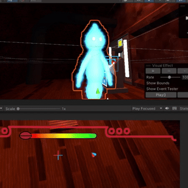
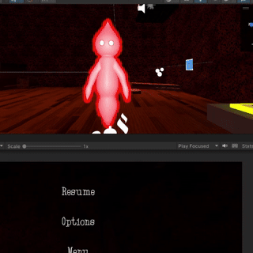

Attachment Issues
-
Engine
Unity
-
Language
C#
-
Duration
4 months
-
Team Size
5
-
Role
Producer/Proggrammer
Responsibilities:
Producer
Programmer
Art
My Contributions:


Visual Feedback of Sight Detection
Made the players glow brighter as you look at the player for longer peroid of time

Visual Effect Reflection
had to deal with setting up reflectionProbe on this object so it can properly do reflections

Player Particles
to do this I had to learn some basics of the VFX graph so the particles would spawn on different points of the players mesh
Sight Detection Code
using System.Collections;
using System.Collections.Generic;
using UnityEngine;
public class PlayerBehavior : MonoBehaviour
{
#region Variables
#region playerComponents
[Tooltip("Other Player Script")]
public PlayerBehavior otherPlayer;
[Tooltip("Players Camera Component")]
public Camera cam;
private CapsuleCollider coll;
#endregion
#region RaycastStuff
[Tooltip("Vector 3 Holding if the player has seen a specified object")]
public Vector3 testSeen;
[Tooltip("If the current player is looking at other player")]
public static bool isLooking;
[Tooltip("")]
public bool teleportToCrane;
private RaycastHit hit;
#endregion
#region Mirror stuff
[Tooltip("Layer of the mirror")]
public LayerMask layer;
Plane[] calPlanes;
/// <summary>
/// All the mirrors that are in the current scene
/// </summary>
private List <MirrorBehavior> mirrorsInScene = new List<MirrorBehavior>();
/// <summary>
/// refrence to current plane that has been hit of mirror behaviour
/// </summary>
private GameObject plane;
/// <summary>
/// refrence to MirrorBehaviour script that has been contains the plane that has been hit
/// </summary>
private MirrorBehavior mb;
#endregion
#endregion
void FixedUpdate()
{
if (!GameController.isDead)
{
if (cam.gameObject.activeInHierarchy)
{
/* Movement Code Ommited Here */
IsAnyMirror(out plane, out mb);
Vector3 h = RaycastToObj(otherPlayer.meshR.gameObject, "Player");
if(h == Vector3.zero)
h = RaycastToObj(otherPlayer.cam.gameObject, "Player");
if (h != Vector3.zero)
{
isLooking = true;
Ambient();
}
else if (h == Vector3.zero && isLooking)
{
isLooking = false;
Ambient();
}
}
}
}
/// <summary>
/// Raycasts to object
/// </summary>
/// <param name="raycastedObj">object being raycasted<obj raycasted /param>
/// <returns>Look rotation</returns>
public Vector3 RaycastToObj(GameObject raycastedObj, string Tag = "")
{
if (cam.gameObject.activeInHierarchy)
{
if (Physics.Raycast(cam.transform.position, (raycastedObj.transform.position - cam.transform.position).normalized,
out hit, Mathf.Infinity, ~layer) && CheckIsVisible(cam, raycastedObj))
{
if (hit.collider.gameObject == raycastedObj || tag != "" && hit.collider.gameObject.CompareTag(tag))
{
Debug.DrawLine(cam.transform.position, hit.point, Color.red);
return (raycastedObj.transform.position - cam.transform.position).normalized;
}
else
{
Debug.DrawLine(cam.transform.position, hit.point, Color.blue);
}
}
else if (mb != null && raycastedObj != plane)
{
Vector3 dir = RaycastToObj(plane);
if (dir != Vector3.zero)
{
if (mb.MirrorStuff(this, otherPlayer, dir, plane))
return dir;
}
}
}
return Vector3.zero;
}
/// <summary>
/// Checks all mirrors in scene and if any of the planes are visible on that mirror then quits
/// otherwise the inputs will be set to null
/// </summary>
/// <param name="plane"> Plane that is seen from</param>
/// <param name="mb"> Script parent holding info to plane</param>
public void IsAnyMirror(out GameObject plane, out MirrorBehavior mb)
{
foreach (MirrorBehavior h in mirrorsInScene)
{
mb = h;
foreach (GameObject g in h.planes)
{
plane = g;
if (!IsVisible(g) && RaycastToObj(g) == Vector3.zero)
{
h.Disable();
}
if (IsVisible(g) && RaycastToObj(g) != Vector3.zero)
{
h.Enable();
return;
}
}
}
plane = null;
mb = null;
}
/// <summary>
/// If both the x and y coordinate of the returned point is between 0 and 1 (and the z coordinate is positive)
/// then the point is seen by the camera aka returns true
/// </summary>
/// <param name="obj">Gameobject that checked if it is visible</param>
/// <returns>if obj is seen</returns>
public bool IsVisible(GameObject obj)
{
testSeen = cam.WorldToViewportPoint(obj.transform.position);
if (testSeen.x >= -.02 && testSeen.x <= 1.05)
{
if (testSeen.y >= -.2 && testSeen.y <= 1)
{
if (testSeen.z >= 0)
{
return true;
}
}
}
return false;
}
private bool CheckIsVisible(Camera c, GameObject target)
{
var planes = GeometryUtility.CalculateFrustumPlanes(c);
var point = target.transform.position;
foreach (var plane in planes)
{
if (plane.GetDistanceToPoint(point) < 0)
{
return false;
}
}
return true;
}
}
Sight Detection With "Mirrors"
using System.Collections;
using System.Collections.Generic;
using UnityEngine
public class MirrorBehavior : MonoBehaviour
{
public GameObject camObj;
private Camera cam;
public GameObject[] planes = new GameObject[2];
public PlayerBehavior p1;
public PlayerBehavior p2;
private RaycastHit hit;
public GameObject reflectionProbe
Plane[] calPlanes
public bool isSeen
private void Awake()
{
cam = camObj.GetComponent<Camera>();
}
private void SetCamFov(PlayerBehavior player, GameObject plane)
{
float t = Vector3.Distance(player.transform.position, plane.transform.position);
cam.fieldOfView = 60 * Mathf.Pow(Mathf.Exp(1), -0.077f * t);
/*
* ^ IMPORTANT CAN BE MORE PRECISE
*/
}
/// <summary>
/// If both the x and y coordinate of the returned point is between 0 and 1 (and the z coordinate is positive)
/// then the point is seen by the camera aka returns true
/// </summary>
/// <param name="obj">Gameobject that checked if it is visible</param>
/// <returns>if obj is seen</returns>
public bool IsVisible(GameObject obj)
{
Vector3 testSeen = cam.WorldToViewportPoint(obj.transform.position);
if (testSeen.x >= -.1 && testSeen.x <= 1)
{
if (testSeen.y >= -.1 && testSeen.y <= 1)
{
if (testSeen.z >= 0)
{
return true;
}
}
}
return false;
}
/// <summary>
///
/// </summary>
/// <param name="curP">Current Active Player</param>
/// <param name="othrP"> Other Inactive Player</param>
/// <param name="dir">Direction of the player looking at mirror</param>
public bool MirrorStuff(PlayerBehavior curP, PlayerBehavior othrP, Vector3 dir, GameObject plane)
{
if (dir != Vector3.zero)
{
Vector3 h = Vector3.Reflect(dir, plane.transform.up);
Debug.DrawRay(transform.position, h, Color.green);
camObj.transform.rotation = Quaternion.LookRotation(h);
SetCamFov(curP, plane);
if (GeometryUtility.TestPlanesAABB(calPlanes, curP.p_Renderer.bounds))
{
print(othrP.name + " is detected");
}
calPlanes = GeometryUtility.CalculateFrustumPlanes(cam);
if (GeometryUtility.TestPlanesAABB(calPlanes, curP.p_Renderer.bounds) &&
Physics.Raycast(cam.transform.position,
(curP.othrP.cam.transform.position - cam.transform.position).normalized,
out hit, Mathf.Infinity, ~curP.layer))
{
Debug.DrawLine(cam.transform.position, hit.point, Color.blue);
if (hit.collider.gameObject.Equals(othrP.gameObject))
{
return true;
}
}
}
return false;
}
public void Enable()
{
cam.gameObject.SetActive(true);
reflectionProbe.SetActive(true);
}
public void Disable()
{
cam.gameObject.SetActive(false);
reflectionProbe.SetActive(false);
}
}